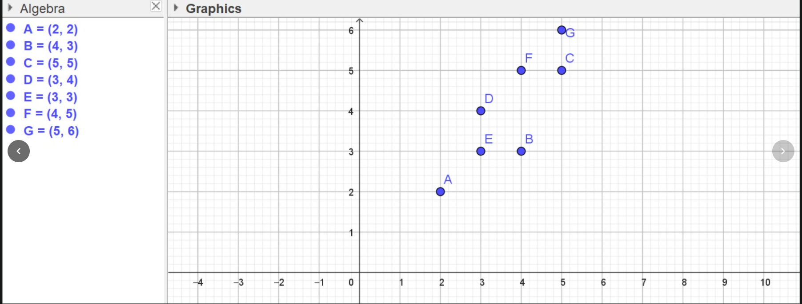
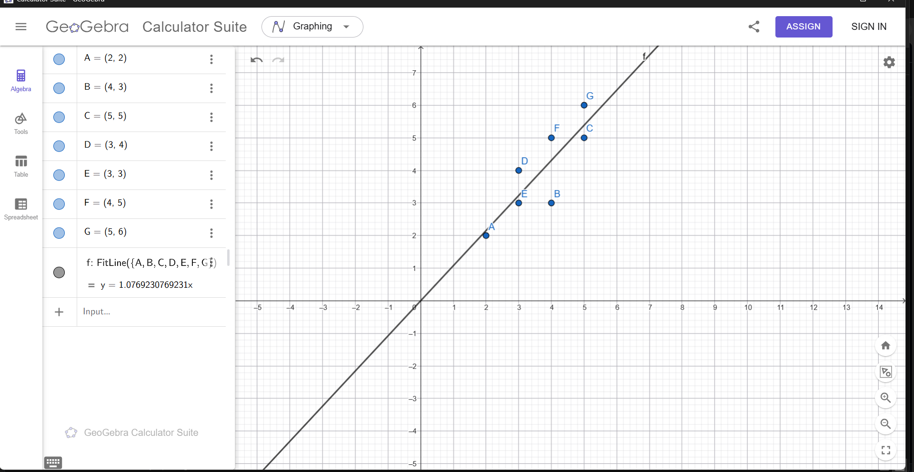

Laporan Analisis Data: Regresi Linier (Pendekatan Analitik Matriks & Scikit-Learn)#
Dokumen ini menyajikan pembahasan komprehensif mengenai penerapan metode Regresi Linier. Tujuan utama dari tugas ini adalah untuk mengidentifikasi, memodelkan, dan mengevaluasi hubungan linier dari observasi dua variabel. Pemodelan ini pada akhirnya akan menghasilkan sekumpulan parameter yang mendefinisikan garis regresi (best fit line) untuk tujuan prediksi data pada observasi yang belum terpetakan.
Dataset yang dianalisis terdiri dari tujuh titik koordinat sebagai observasi empiris:
A(2,2)
B(4,3)
C(5,5)
D(3,4)
E(3,3)
F(4,5)
G(5,6)
Dalam struktur ini, angka pertama mewakili variabel prediktor tunggal atau Independent Variable (\(X\)), dan angka kedua mewakili variabel respons atau Dependent Variable (\(Y\)).
Dalam tinjauan ini, persoalan akan diselesaikan melalui tiga metode analisis bertingkat:
Analisis Visual menggunakan representasi grafis dengan GeoGebra.
Analisis Matematis / Analitik menerapkan model matriks berbasis metode Kuadrat Terkecil Biasa (Ordinary Least Squares OLS) dengan rumus \(\hat{\beta} = (X^T X)^{-1} X^T Y\).
Analisis Komputasional menggunakan pustaka standard Machine Learning dalam ekosistem Python, yaitu
scikit-learn.
Langkah 1: Visualisasi Data melalui Scatter Plot#
Tahapan pendahuluan sebelum melaksanakan estimasi model adalah mengobservasi pola distribusi data secara visual.

Interpretasi Grafis: Berdasarkan visualisasi diagram pencar matriks koordinat tersebut, distribusi sekelompok observasi membentuk sebuah tren yang cenderung bergerak ekuivalen naik dari arah kuadran kiri bawah menuju ke kanan atas. Formasi ini mengindikasikan eksistensi korelasi linier positif, di mana sebuah kenaikan pada skala nilai \(X\) cenderung akan diikuti pula oleh kenaikan proporsional terhadap estimasi nilai \(Y\).
Pemodelan regresi akan merancang suatu garis prediksi sedemikian rupa. Keberadaan fenomena variansi menyiratkan bahwa setiap observasi aktual niscaya tidak akan memotong tepat di garis lurus yang tunggal yang terbentuk. Diferensiasi rentang jarak absolut dari garis estimator linear ideal pada tiap individual diobservasi didefinisikan sebagai galat (Residual/Error). Konsekuensinya, obyektif komputasi ini bertumpu pada minimisasi total akumulasi sisa kuadrat residual, yang selanjutnya dipatenkan dengan sebutan metode Least Squares.
Langkah 2: Perhitungan Matematis (Metode Analitik Matriks)#
Model persamaan regresi linier secara konseptual dapat disubstitusikan ke dalam formula geometris:
\(\beta_0\) (Intercept/Konstanta): Menunjukkan nilai perpotongan yang melintasi proyeksi sumbu \(Y\) di saat prediktor \(X = 0\).
\(\beta_1\) (Slope/Gradien): Menunjukkan nilai pergerakan nilai ekspektasi \(Y\) setiap satuan perubahan kuantitas sumbu \(X\).
Analisis regresional dari parameter estimator \(\beta_0\) maupun koefisien \(\beta_1\) digarap dengan metode aproksimasi matriks (OLS) mengacu kepada perumusan analitik sebagai berikut:
Formulasi komputasi tersebut diklasifikasi dalam tahapan-tahapan berurutan:
Mendesain kerangka Matriks X. Kolom pertama diisi dengan nilai observasi konstan 1 (merepresentasikan titik intersepsi), sedangkan sisanya merangkum semua susunan nilai prediktor variabel \(X\).
Mendesain kerangka Vektor Y, bermuatan observasi empiris titik parameter akhir.
Memproduksi hasil transposisi Matriks X yang dilambangkan dengan \(X^T\).
Menjalankan operasi ekuasi turunan perkalian skalar (dot-product) antara format matriks ter-transpos, \(X^T\), dan parameter matriks orisinal, \(X\), sehingga membentuk model matrik gramian: \((X^T X)\).
Mengkonversi inversi balikan operasi tersebut ke derivatif: \((X^T X)^{-1}\).
Perkalian berlanjut terhadap elemen \(X^T\) dan akhirnya dikomputasikan silang terhadap parameter vektor target \(Y\).
Parameter nilai \(\hat{\beta}\) dari formulasi di atas merepresentasikan struktur hierarkis nilai target dari elemen Intercept maupun Slope pada model data matematis.
Berikut ini adalah penjabaran representasi kode fungsional untuk mengesekusi kalkulasi di atas secara terotomasi menggunakan komputasi librari linier aljabar, numpy:
import numpy as np
# 1. Representasi dataset observasi berdasarkan nilai koordinat (A - G)
x_data = [2, 4, 5, 3, 3, 4, 5]
y_data = [2, 3, 5, 4, 3, 5, 6]
# 2. Pembentukan matriks model (Design Matrix)
# Inisialisasi parameter bernilai '1' direkatkan ke dalam komponen matriks agar mengakomodir keberadaan 'Intercept'
X = np.array([[1, x] for x in x_data])
Y = np.array(y_data).reshape(-1, 1) # Di-reshape menjadi format vektor kolom berdimensi dua tunggal
print("Matriks Fitur (X):\n", X)
print("\nVektor Respons (Y):\n", Y)
# 3. Implementasi Persamaan Kuadrat Terkecil (OLS Matrix Formulation): Beta_hat = Inverse(X_transpose * X) * X_transpose * Y
# [Tahap A] Identifikasi Transpos dari Matriks X
X_T = X.T
# [Tahap B] Proses perkalian dot/skalar Matriks X_T terhadap X
X_T_X = X_T.dot(X)
# [Tahap C] Menemukan Nilai Inversi dari matriks hasil perkalian (X_T_X)
X_T_X_inv = np.linalg.inv(X_T_X)
# [Tahap D] Perkalian hasil Invers terhadap elemen X_T
Tahap_D = X_T_X_inv.dot(X_T)
# [Tahap Evaluasi Akhir] Substitusi silang terhadap vektor komparatif Y dalam rangka menyelesaikan matriks koefisien (Beta Hat)
beta_hat = Tahap_D.dot(Y)
# Menampung titik keluaran beta0 & beta1
intercept_manual = beta_hat[0][0]
slope_manual = beta_hat[1][0]
print(f"\n-- HASIL EVALUASI ANALITIK MATRIKS --")
print(f"Intersep (Konstanta Data) : {intercept_manual:.4f}")
print(f"Slope (Kemiringan Gradien) : {slope_manual:.4f}")
print(f"\n>> Pemodelan Regresi OLS: y = {intercept_manual:.4f} + {slope_manual:.4f}x")
Matriks Fitur (X):
[[1 2]
[1 4]
[1 5]
[1 3]
[1 3]
[1 4]
[1 5]]
Vektor Respons (Y):
[[2]
[3]
[5]
[4]
[3]
[5]
[6]]
-- HASIL EVALUASI ANALITIK MATRIKS --
Intersep (Konstanta Data) : 0.0000
Slope (Kemiringan Gradien) : 1.0769
>> Pemodelan Regresi OLS: y = 0.0000 + 1.0769x
Langkah 3: Komputasi Model Menggunakan Pustaka scikit-learn#
Penjabaran algoritma perhitungan teknis matriks di atas merupakan pijakan logis dalam menyelesaikan operasi yang relevan menggunakan perantara optimasi Machine Learning. Dalam lingkungan komputasi riil, pembedahan parameter sering ditangani secara praktis menggunakan modul pendukung komprehensif, yakni scikit-learn.
Regresi linier adalah entitas dari klasifikasi algoritma bertipe Supervised Learning. Keabsahan premis ini didasari dari pelacakan model terhadap intervensi data training bernilai pasti (Y aktual) guna menjabarkan fungsi ground truth sehingga kalkulasi pemodelan sistem komputasi berpotensi mencetus luaran hasil ekstrapolah rasional bagi kondisi serupa berikutnya.
Proses eksekusi algoritma fungsional menggunakan representasi komputasi scikit-learn terangkum sebagai berikut:
from sklearn.linear_model import LinearRegression
# Restrukturisasi array numerik X ke format terstruktur linier 2D dan menjaga stabilitas y berdimensi ekuivalen 1D
X_sklearn = np.array(x_data).reshape(-1, 1)
Y_sklearn = np.array(y_data)
# Mengaktifkan entitas Model Regresi Linier
model = LinearRegression()
# Memprogram model agar melakukan optimisasi analitik data otomatis (proses training melalui komputasi C underlying sklearn)
model.fit(X_sklearn, Y_sklearn)
print("-- HASIL KOMPUTASI LIBRARY SCIKIT-LEARN --")
print(f"Intersep Model: {model.intercept_:.4f}")
print(f"Slope Model : {model.coef_[0]:.4f}")
print(f"\n>> Pemodelan Regresi Terotomatisasi : y = {model.intercept_:.4f} + {model.coef_[0]:.4f}x")
-- HASIL KOMPUTASI LIBRARY SCIKIT-LEARN --
Intersep Model: -0.0000
Slope Model : 1.0769
>> Pemodelan Regresi Terotomatisasi : y = -0.0000 + 1.0769x
Evaluasi Akhir: Verifikasi Data Regresi & Analisa Visual GeoGebra#
Integrasi dua spektrum eksekusi metode (konsep operasional Matriks Manual maupun komputasi Pustaka Sistematis) secara substansial mencetak identitas koefisien numerik yang stabil dan bersinergi ekuivalen pada perumusan absolut (dengan nilai intercept mengarah tereduksi menjadi \(0\) atau diabaikan akibat sifat spesifik sebaran data centring):
y = 1.0769x

Signifikansi Pemodelan
Formasi fungsi garis estimator linier yang dirender secara simetris dalam GeoGebra, dan disusul integrasi kalkulasi di lingkup algoritma Python, memastikan keberhasilan mereduksi total distorsi error residu (residual loss). Pencapaian kalkulasi ini merepresentasikan substansi fungsional terpenting bagi permodelan Data Science, yaitu kapabilitas prediksi data ekstrapolasi empiris luar model.
Sebagai contoh konkret, andaikata pada periode selanjutnya direpresentasikan sampel dengan parameter rasio independen sebesar \(x = 20\), sistem regresi terintegrasi di atas akan memastikan keluaran prediksi tanpa iterasi kalkulus repetitif.
Formulasi prediksi adalah evaluasi substitusi linier:
\(y = 1.0769 \times 20\)
\(y = 21.538\)
Konklusi ini memastikan model dapat diterapkan ke dalam parameter observasi berkelanjutan yang bersifat skalabel dan general.